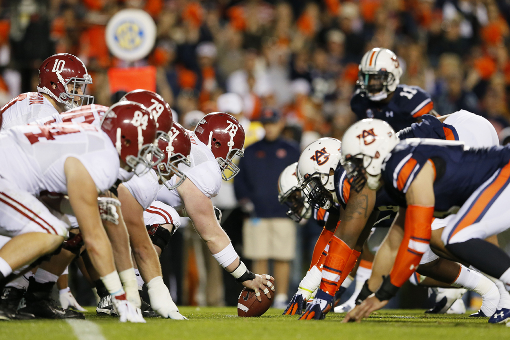

SEC Chamionship hopes at their greatest stakes going into the final weeks of the season.
| West Team | Conference | Overall | East Team | Conference | Overall |
|---|---|---|---|---|---|
| Alabama | 6-0 | 9-0 | Florida | 4-2 | 6-2 |
| Auburn | 5-1 | 7-2 | Kentucky | 4-3 | 5-4 |
| Texas AM | 4-2 | 7-2 | Georgia | 3-4 | 5-4 |
| LSU | 3-2 | 5-3 | South Carolina | 3-4 | 5-4 |
| Arkansas | 2-3 | 6-3 | Tennessee | 2-3 | 6-3 |
| Mississippi State | 2-3 | 4-5 | Vanderbilt | 1-4 | 4-5 |
| Ole Miss | 1-4 | 4-5 | Missouri | 0-5 | 2-7 |
With the end of the regular season drawing near, every game in the SEC is starting to count more and more. After the first week of play since the release of the College Football Playoff Rankings, there were several games that will shake up the SEC. Texas AM was surprising ranked ahead of an undefeated Washington team. However, Texas AM was not able to live up to the hype as they suffered a hope crushing loss to Missippi State. Not only did Texas AM suffer its third loss of the season, but they also lost starting quarterback Trevor Knight to an arm injury and star defensive end Myles Garrett to a shoulder injury. Texas AM's loss will most likely eliminate them from contention in the SEC West and Playoff race. In other games in the SEC West, Alabama continued its dominance by defeating LSU in a classic defensive battle. Alabama finished the game with 13 points while its stout defense held LSU scoreless. Auburn is sure to move up in the rankings this week after defeating Vanderbilt and with other teams in the top 10 losing. Also, Ole Miss survived a scare from Georgia Southern while Arkansas handily beat the first place East team, Florida. With Florida still atop the SEC East, other teams are slowly creeping up behind them. Although Kentucky suffered a close loss to Georgia, they still reamin second in the East. South Carolina and Tennessee are the only two other teams besides Florida and Kentucky that have a shot at the East, but those teams will need some help. Georgia, Vanderbilt, and Missouri are all eliminated from the East race.

No other games will be more important in determining the SEC champion than the ones in the final three weeks of the season. Alabama, the only remaining undefeated team in the SEC, has already made it through the toughest part of their schedule. However, Alabama will have to face rival Auburn in the final week of the season. If both teams continue their win streaks, that game will determine the SEC West and the team that will compete in Atlanta for the SEC Championship. In the East, Florida is in control of their own destiny, however, if they slip up, Kentucky or South Carolina could steal the East. Florida's remaining schedule is no easy task with games against South Carolina, LSU, and Florida State. All three of the games have the potential to go wrong for the Gators, but if they pull through, they will seal their name as SEC East Champions. But, if Florida does stumble going into the last leg of the season, Tennessee or Kentucky could slide into the SEC Championship. With games against Vanderbilt, Kentucky, and Missouri, Tennessee has a great chance to make the championship if Florida loses one more game. If Tennessee does slip up along with Florida, Kentucky could make an unlikely visit to the championship since their remaining games include Tennessee, Austin Peay, and Louisville, which is no easy task. If Florida loses one more game, the Tennessee and Kentucky game will prove to be pivotal in determining the SEC East champion. Many analysts are claiming it to be one of the most important games in determining the East. Clint Stoerner from SEC Network said,
This is a must-win game for both of these universities.
With all of this said, I believe the SEC Championship in Atlanta will be a battle between Auburn and Tennessee. Auburn will make it to the championship because two of their final three games include Georgia, a heavily underachieving team this year, and Alabama AM, which is an lower-tier FCS team. Even though Auburn's final game is against Alabama, I believe that Alabama is bound to lose at some point and with it being a rival game, Auburn has just as good a chance as anyone has had all season. Also, in the East, Tennessee has one of the easiest SEC schedules going into the final weeks of the season. Their last three opponents all have losing records and therefore should be beatable teams. Along with Tennessee's easy schedule, Florida has a very difficult one with two ranked opponents remaining. Tennessee needs Florida to lose only one of their last three games for them to advance to the SEC Championship. Therefore, it is likely that the SEC Championship will be an unlikely matchup between Auburn and Tennessee